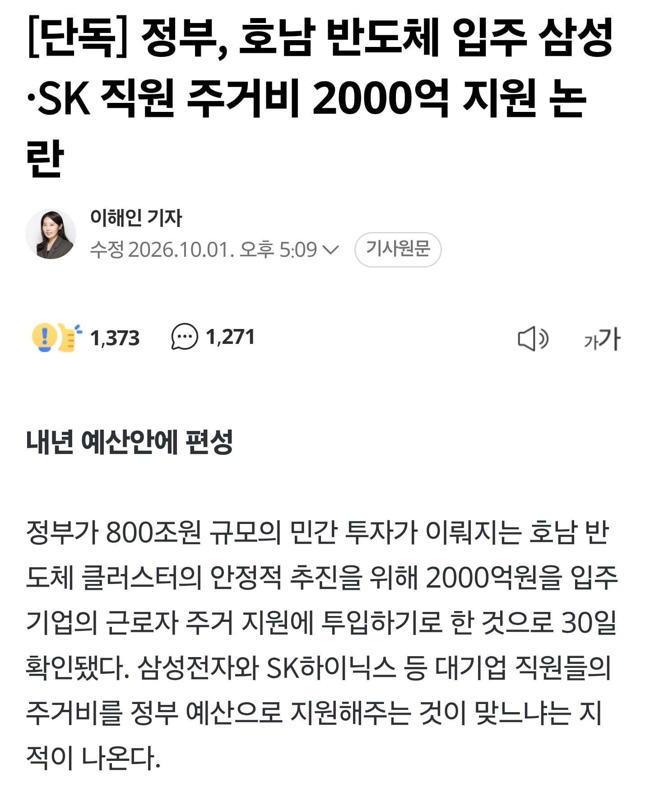

정부가 800조원 규모의 민간 투자가 이뤄지는 호남 반도체 클러스터의 안정적 추진을 위해 2000억원을 입주 기업의 근로자 주거 지원에 투입하기로 한 것으로 30일 확인됐다.
국민 세금으로 지원해준다고 함 ㄷㄷ

정부가 800조원 규모의 민간 투자가 이뤄지는 호남 반도체 클러스터의 안정적 추진을 위해 2000억원을 입주 기업의 근로자 주거 지원에 투입하기로 한 것으로 30일 확인됐다.
국민 세금으로 지원해준다고 함 ㄷㄷ
댓곱창난거보니 정사판 부계 본계 총출동했네 ㅋㅋ
병신들
진짜 간다고 믿는애들도 있나?ㅋㅋ
반도체초과세수로 헛지랄 하지말고
이공계 장학금, 교수들 연구지원 이런거나 꾸준히 했으면 좋겠다
저거한다고 되것냐 인재가없고 인프라가없는데
걍 반도체는 청주서하자
표되니까 지방에 뿌려대늨데 죽을 노인네들 부랄빨아서 뭐하잔건지
표빨면 그 노인네들 뒤질때까지 호의호식 가능함
인구가 늘걸로 예상하니 그에 맞게 인프라를 선제적으로 갖추기 위해 예산을 쓰겠습니다하면서 하는게 아니라 그냥 주거비 꽂아줍니다면 아니 씨발 왜 소리 나오지 어쩔 수 없이
시발 어떻게든 유치시켜서 표빨아처먹으려고
염병을 떠는구나 공기업도 아니고 사기업 직원 주거지원? ㅋㅋㅋ
반도체 초과세수 어떻게 노나먹나 했네
95프로 지지율 텃밭에게 존나 주고 싶은거짘ㅋㅋㅋㅋㅋㅋㅋㅋㅋㅋ
광주가 뽑혔니 하는데ㅋㅋㅋㅋㅋㅋ뽑을려고 넣은거잖아
뭔 평야니 전기니 물이니 하고 있어
그리 대규모 면적이 필요한 산업도 아니고 다른곳은 물 어디다 못 끌어오는줄 아나 ㅋㅋㅋ
산업 인프라가 중요한건데
당장에 공장어디 부셔저서 발주 넣어야는데 전라도 출장은 5시간은 더걸리고
왔다갔다 하는데 부속품 뭐 없다고 또 타지역에서 가져오고 할 시간손해를 생각 전혀 못 해 ㅋㅋㅋㅋㅋㅋㅋ
일단 광주오면 다해준다고 하는데
반도체 붐이 언제 어떻게 끝날지
중국 허접해도 잘 쫒아오고
미국도 다시 참전하니마니 하는데ㅋㅋ
거기다 무안 하는짓 거리 봐라ㅋㅋㅋㅋ들어가면 어휴
광주 안돼면 구미갔을거임
구미는 무슨 기존 클러스터 근처지 ㅋㅋ
기존 클러스터 근처에 짓는게 여건상 불가능했음
지방 분산하려면 기존 클러스터인 천안 청주가 딱임 그 밑으로는 인천공항이랑 너무 멀어져
충청도에 짓는게 나았다. 전라도엔 반도체관련된 회사들이없는데 뭔 내가 관련업곈데 전라도권에는 거의 없다고봐도 됨 경기 충청에 거의다있고 경상도에 쪼끔있음
애초에 광주랑 구미만 놓고 경쟁시키니까 광주가 좋아보이는거지 후보지 더늘려서했으면 충청도에서 가져갔을거라고 봄
전라도로 출장가면 걍 하루날리는거임. 반나절출장을 1박2일로 바꿔야될지경
충청도 포함 다 놓고 해서 광주랑 구미만 남았고 거기서 광주 최종선정된거다.
반도체 회사 다님? 경영지원만 알텐데? 그리고 그때 광주는 후공정 단일이었음
어
그러면 안되는거 잘 알겠네 sendfab도 알지?
전문용어가 나오자 화들짝 놀라 튀어버린 그...
너 경지건물에있음? Pnt5에서 오늘 볼수있음?
로드맵에 충청도증설 있던거 싹 지우고 광주구미만 남겨뒀으니까...
대학교부터 근 10여년간 전라도 출장 한번도 안갔는데 업계인 아닌새끼들이 광주가 구미보다 낫다고 더 잘 아는척 하더라 ㅋㅋㅋㅋ
ㅋㅋㅋ ㅆㅇㅈ 광주도 별로고 구미도 별로지만 굳이지을거면 구미에지어야지
충청도는 부지도 없고 전력 및 용수도 포화 상태고, RE100도 달성하기 어렵대. 대신 81조 규모로 첨단 HBM(고대역폭메모리) 및 후공정(패키징) 특화 거점으로 만들거래
삼성직원 대충 이천명만 저기가서 생활비 일년에 이삼천만 써도 저 지역 상인이나 삼성으로 인해 주변에 발주될 하청물량이나.. 이천억이 안아까운거 아닌가 지방살리는거에?
일단 삼성전자만 기준 잡아보면 평택도 안가려고 한다, 가도 전세나 월세 잠깐 살지
정사판 고닉들이 누군지 알게 되었다
개병신 적폐지역
하...시발 진짜 이게 맞냐
너무 자극적인 부분만 들고 온것 같은데?
보통 우리나라 산업단지 만들때 그 규모에 따라 지원은 다 하잖아?
그리고 현재 집값상승이나 인구 감소 문제의 원인을 따라가면 서울 집중화 현상 때문에 발생한 건데 이거 해결하는데 세금 쓰는 것도 목적성에 맞는것 같고.
물론 섬버리같은 세금 빼먹기나 지원 받는 인원의 모럴해저드 문제는 단속이랑 감시 빡세게 해야 하는게 맞는거지만.
우리 글쓴이는 그럼 삼성 하이닉스에서 직원 주거비 줘야 한다는 거임?
그리고 요새보면 글쓴이나 일부 댓들 처럼 정떡 묻은 글 쪄오는데 유게말고 정사판 가서 니들끼리 싸우면 안됨? 의도가 너무 보여서 좀 많이 짜치는데 좀 꺼져줬으면 좋겠어.
곧 임시게로 갈 글입니다
인터넷 찾아보니
1) 부지 - 광주가 구미에 비해 부지확장성이 더 좋았다. (광주 군공항 이전 단일 부지 > 구미 제 5산단)
2) 신재생 에너지 인프라 - 구미는 원자력 기반인데 순수신재생 에너지는 전라도가 압도적. 애플 구글에 납품하기 위해 RE100을 충족하기 좋음
3) 지진 안정성 - 영남권이 한번씩 지진이 나는것에 비해 호남권은 25년간 4.0 이상 지진이 한차례도 난적이 없음
4) 장기 개발 소외 역설 - 구미는 이미 국가 산업단지로 대규모 혜택을 받은 성숙한 도시. 호남은 제조업유치에 소외되어 이번에 발탁 근거
그래서 충청도도 비교해봤는데
1. 전력 및 용수가 이미 포화상태
2. 단일 250만평 이상의 즉시 개발 가능한 국유지가 없음. 민간토지 수용절차가 오래걸림
3. RE100에 대해 대응력부족
그렇다고 충청권을 배제한건 아니고첨단 HBM 및 후공정 특화거점으로 고도화 한대
역할분담이
수도권, 충청권, 호남권, 영남권 각각 이루어지도록 한다는거임
호남권(전라도): 웨이퍼를 구워내는 '메인 제조 기지'
충청권: AI 반도체의 완성도를 높이는 '첨단 패키징 허브'
영남·대경권(구미 중심): 공급망을 지탱하는 '소부장 혁신 기지'
한 줄 요약:
대한민국 반도체 지형은 구미(영남)가 소재를 대고 ➡️ 전라도(호남)가 공장에서 칩을 구워내면 ➡️ 충청도가 이를 완벽하게 조립·포장(패키징)하여 수출하는 유기적인 분업 생태계로 완성됩니다
해당 내용에 관심이 없어서 이번에 좀 찾아봤는데 딱히 호남에 건설되는게 딱히 이상하지는 않은것 같음
그리고 원래 지방 이전에는 저정도 지원해줌. 예전 기업들 제주도 이전하는 것 관련해서 거주비 및 법인세 감면 등으로 몇천억 정도 규모로 지원 및 감면이 있었음
그리고 부지제안은 정부가 했는데 선정은 기업이 했대
원래 정부는 여기저기 제안했는데 기업측이 "거대한 독점 평지"를 아주 중요하게 봤다고 그러네
그래서 거기에 부합하는게 광주 군공항 부지 정도말고는 없었다고 함
구미 제5국가 산업단지 는 82만평 규모, 광주 군공항 부지는 250만평
게다가 구미는 반도체 단일 산업으로 인해 땅 전체를 비워두고 독점할 수 있는 구조가 아니었다고 함
그리고 구미 부지에는 그동안 하던 소부장을 더 증설하는게 맞다는 결론이 남
찾으면 찾을 수록 위에 많은 댓글들이 정치적 의견으로만 보임
정부가 표를 주는곳이라서 지정했다느니 하는 정치글은 정사판에 쓰도록 하자
진짜 간다면 해주는거도 괜찮다고 보는데 문제는 저기서 얼마나 쪼개먹을까 생각하면 뭐
맨날 피의쉴드 정훈교육하는 보라색레벨 그새끼 역시나 있네 ㅋㅋㅋㅋㅋㅋㅋㅋㅋ